Introducing ArcGIS Field Maps and ArcGIS Online for Data Collection
Collecting Field Data with ArcGIS Online and Field Maps
Overview
This lab introduces ArcGIS Online and ArcGIS Field Maps as tools for mobile spatial data collection. You will explore a workflow for creating and managing a shared field data collection project using a web browser and a phone or tablet.
Together, ArcGIS Online and Field Maps provide a powerful way to design field forms, deploy maps to mobile devices, collect points and attachments, and sync edits back to a shared database in real time.
This is an important kind of spatial workflow to understand because not all GIS work begins with downloaded data. Sometimes the whole point of the project is to create the data yourself. Field collection projects are how people document trees, sidewalks, public art, damaged infrastructure, habitat features, informal trails, historic sites, survey responses, and countless other things that do not already exist in a neat downloadable dataset.
Learning Objectives
By the end of this lab, you should be able to:
- Explain why field data collection requires both geometry and a well-designed attribute schema
- Explain why controlled vocabularies improve consistency and reduce messy data entry
- Explain why offline editing matters in real field conditions
- Create empty hosted feature layers to hold spatial data
- Customize the data schema to match a field data need
- Create lists to drive in-app dropdown menus for controlled vocabularies and standardization
- Customize field survey forms for usability
- Enable attachments such as photos, video, or audio
- Enable offline editing for remote or low-connectivity data collection
- Deploy a field data collection map from ArcGIS Online to iOS or Android devices with the Field Maps app installed
- Share the app and editing role to a controlled group of users
- Download the field data collection app and basemap for offline use
- Collect data and sync it to ArcGIS Online
- Create a simple read-only view of the live data for monitoring data collection
Before You Start
- You will need access to Stanford ArcGIS Online with your SUNetID.
- You will need a phone or tablet with ArcGIS Field Maps installed for the mobile part of the exercise.
- Some screenshots in this lab may show an earlier version of the interface or an earlier quarter's course group name. The workflow is still the same, but button placement and wording may vary slightly.
A good mindset for this lab: do not worry if ArcGIS Online feels a little "clicky" at first. Many web GIS tools work through settings panels, buttons, and forms instead of the more layered desktop workflow you see in QGIS. The key is to keep asking: What data object am I creating? What fields does it need? Who will use it? What will the person in the field actually see?
Part 1: Create a Feature Layer
Log in to ArcGIS Online
- Go to https://stanford.maps.arcgis.com/home/signin.html and Login using your SUNetID & Password using the Stanford University option.
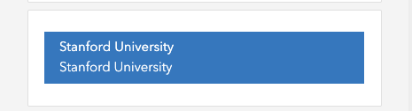
At this point, you should see Stanford's ArcGIS Online landing page. Take a moment to look around. This is where you will create hosted layers, web maps, and sharing groups throughout the exercise.
Create an empty feature layer
- Find the Content link at the top of the page and click it to go to Content.
- In My Content click Create (New Item) and choose Feature Layer to open the Create a feature layer dialog.
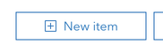
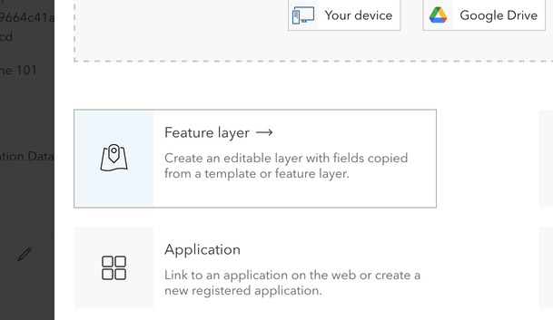
- Select Define your own layer, and click Next.
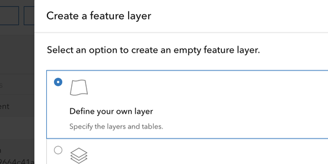
- Use + Add to create individual point, line, and polygon layers and name them as shown in the table below.
| shape | name |
| point | Place |
| line | Path |
| polygon | Area of Interest |
- Provide a title, like
"Walking Tour (SDM)". Since this must be a unique name in your organization, include your SUNetID in the name of this item, and any others in this exercise. Click Save.
Why are we creating three geometry types? Real field projects often need more than one kind of feature. A point might represent a single object like a sculpture or water fountain. A line might represent a path or curb. A polygon might represent a garden, building footprint, or other area. Even if you only use one layer heavily in this exercise, it is useful to see how a field project can be structured to collect multiple kinds of geometry.
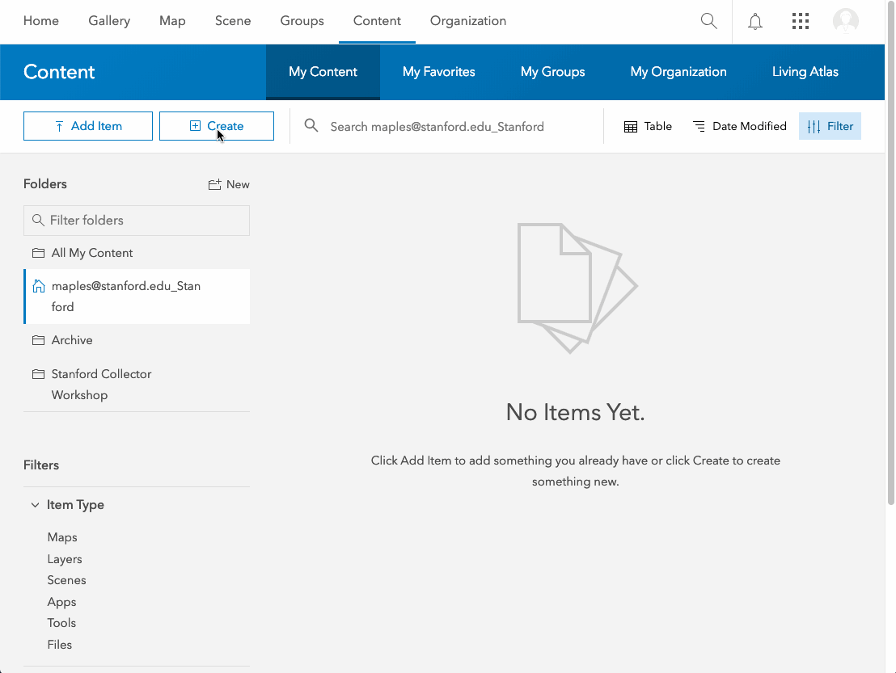
Your Walking Tour layer is created and its item details page should open. In the following steps you’ll create the fields that define the form for the Places layer.
Add fields to the feature class
- Go to the Data tab of the item page and go to Fields. If you created layers for points, lines, and polygons, verify that Place is chosen in the Layer list.
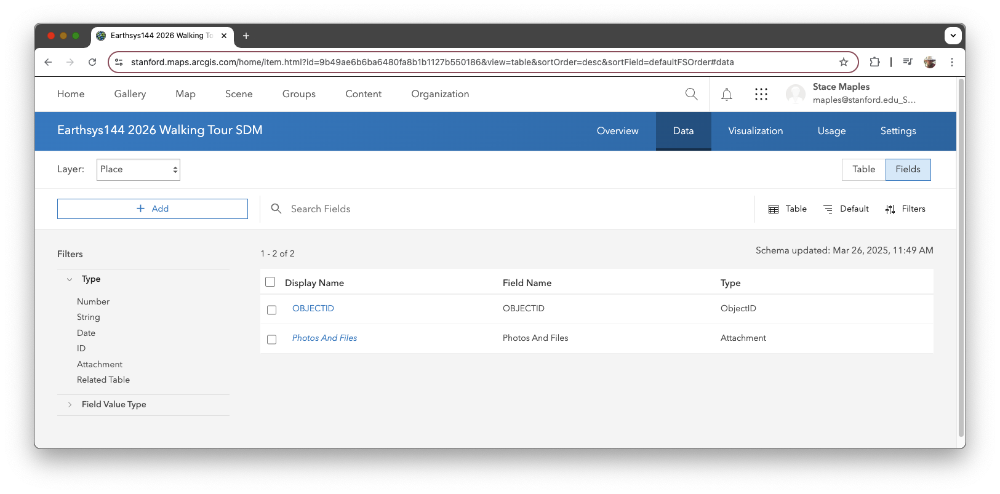
- Click Add. Give the field the name
PlaceTypeand the aliasPoint of Interest Type. Choose type: String. Accept the other defaults and click Add New Field.
Why add fields now? A hosted feature layer is not just geometry. It is also a table. The fields you create here become the structure of the form people fill out in the field. Thinking carefully about fields early helps prevent messy, inconsistent data later.
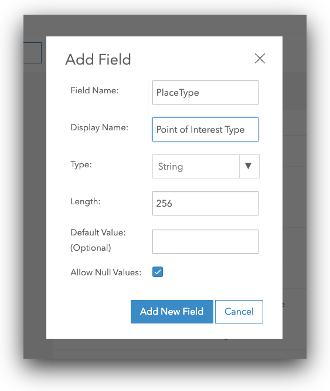
Create a Domain (values list) for the places layer
- Click
Point of Interestin the Display Name list to open the details page for the field. - Click Create List to create a list of choices for the POI Types. Type a label of
Artwith a code of 0.
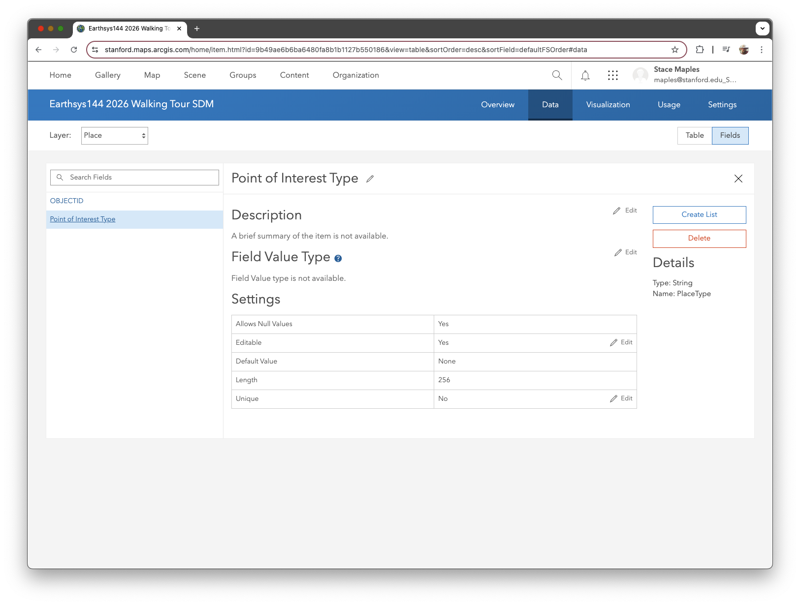
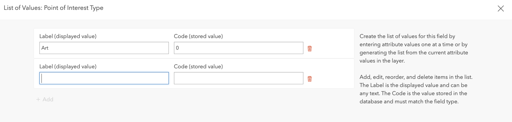
- Add entries for the following:
| label | code |
| Art | 0 |
| Architecture | 1 |
| Gadgetry | 2 |
| History | 3 |
| Other | 4 |
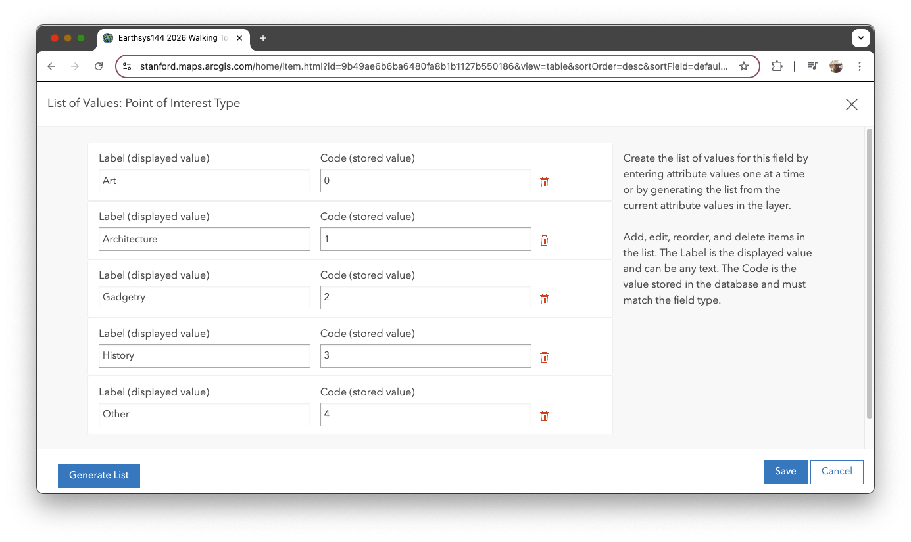
- Click Save.
- Create another field named Label that is a String.
- Create another field named Notes that is a String.
Why use a list of values? Controlled vocabularies make field data cleaner. If users must choose from a short list like
Art,Architecture, orHistory, you avoid messy spelling differences and one-off labels that are hard to summarize later.
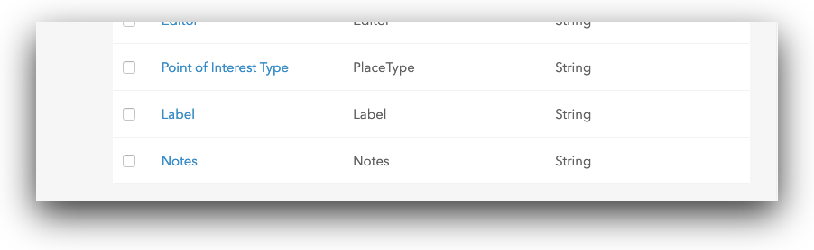
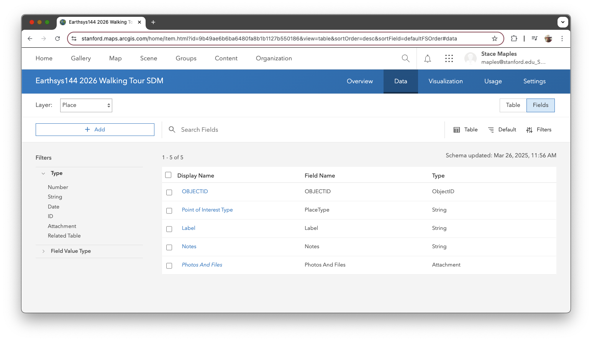
Enable Offline Editing for Field Maps
This is a step that MUST be done before adding your feature layers to an ArcGIS Online map for creating your editing app.
- Click on the Settings tab at the top of the Feature Layer's Details page.
- Make sure that settings under the Editing section at the top are all enabled, in particular that "Enable Sync" is checked.
- Note the other settings for controlling who and how data can be edited.
| Setting Category | Option | Selected / Notes |
|---|---|---|
| Editing | Enable editing | ✅ Enabled |
| Track changes to data (add, update, delete) | ✅ Enabled | |
| Track editor name and time | ✅ Enabled | |
| Enable Sync | ✅ Enabled | |
| Who can edit features? | Share layer to specific users/groups/org | Not shared yet (info only) |
| What kind of editing is allowed? | Add | ✅ Allowed |
| Delete | ✅ Allowed | |
| Update | ✅ Allowed | |
| Update type | Attributes and geometry | |
| True curves | Allow update of true curves | ✅ Enabled |
| Only allow updates by true curve clients | ⬜ Not selected | |
| Feature visibility for editors | Editors can see all features | ✅ Selected (default) |
| Editors can only see their own features | ⬜ Not selected | |
| Feature editability for editors | Editors can edit all features | ⬜ Not selected |
| Editors can only edit their own features | ✅ Selected | |
| Anonymous editor access | Same as signed-in editors | ⬜ Not selected |
| Only add new features (if allowed) | ✅ Selected | |
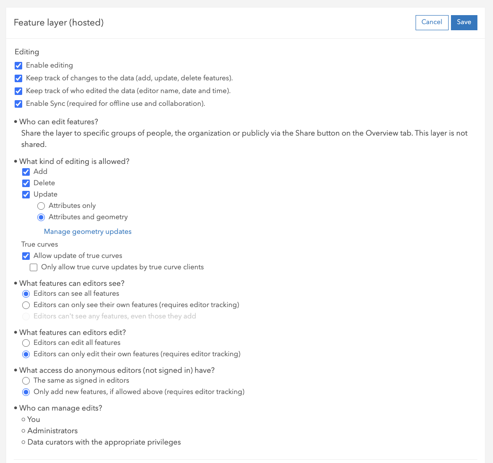
- Click Save to save these settings.
Why offline editing matters: Even on a well-connected campus, field conditions are unpredictable. If your map can work offline, the data collection workflow is much more resilient. This is even more important for environmental fieldwork, archaeology, disaster response, and any site where network access is weak or inconsistent.
Part 2: Make a Map
Now you will add the feature layers you created to an ArcGIS Online web map. This map will drive the behavior of your Field Maps mobile app, so everything from this point forward is about making the field collection experience simpler and clearer for the person using it on a device.
Think like the field user: A mobile field map should be simple. Good symbology, clear forms, and sensible defaults matter because the person using the app may be standing in the sun, walking, juggling a clipboard, or trying to capture data quickly before moving on.
- Return to the Overview tab the Item Details of your layer and click on Open in Map Viewer.
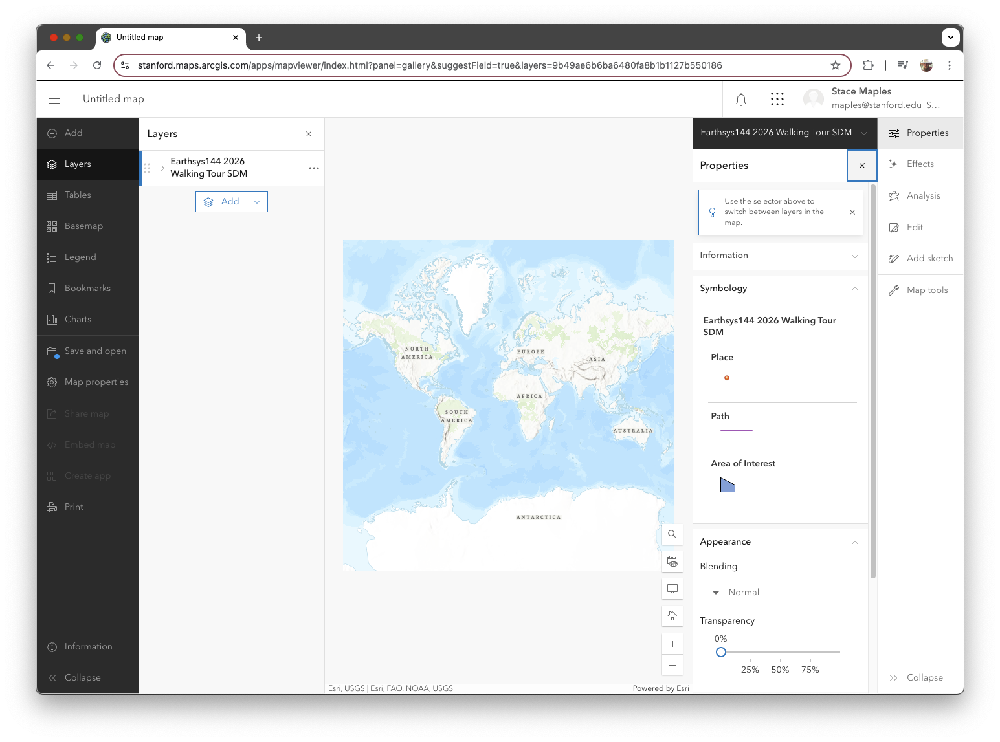
Use the
>>and<<arrows at the bottom left and right of the Map Viewer to expand the toolbars so the controls show text labels as well as icons.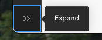
- Click Save and open to save your map.
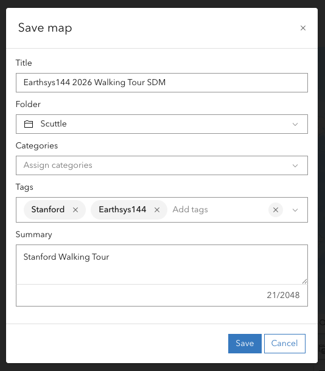
- Use the arrow next to your Walking Tour layer to expand the layer group so you can see the individual feature layers.
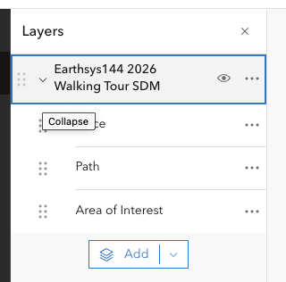
- Click on the Places feature layer in the Layers panel to select it and update the Properties panel on the right.
- Click on Edit layer Style link for the Places layer, in the Symbology box of the Properties panel.
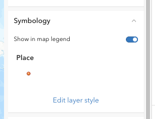
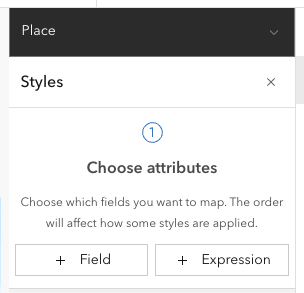
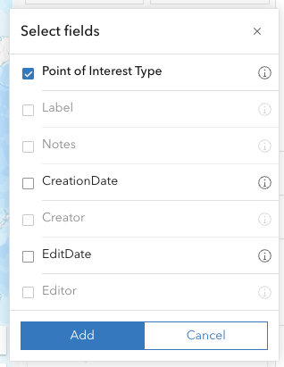
- Click Add.
- In the resulting
Pick a stylebox, click on Style options to open the layer style editing options.
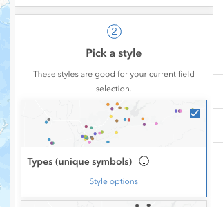
- Configure symbols for each of your POI types. Explore the available symbol categories. The default simple symbols are fine, but you should feel free to experiment as long as the resulting map stays readable.
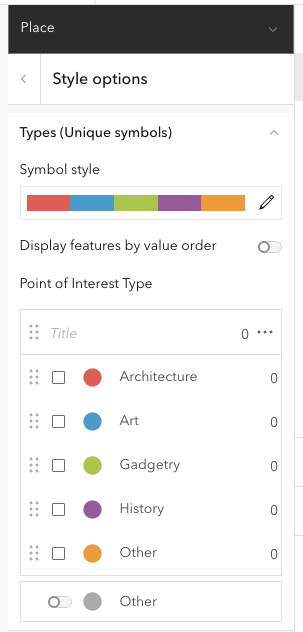
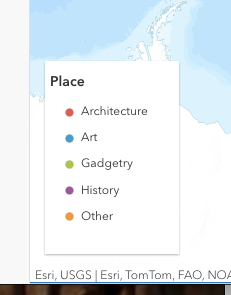
Why spend time on symbology? In a field collection app, symbols are not just decoration. They help users understand what kinds of features already exist on the map and make it easier to distinguish categories quickly while collecting new observations.
Customize Field Visibility
We do not need to change any settings in this section for the assignment, but it is useful to know where this interface lives. In real projects, this is where you control what a user sees in a pop-up and what fields are visible or hidden.
Concept note: Good schema design is only half the job. Good interface design matters too. A form can have sensible fields and still be frustrating if users are shown too much, too little, or the wrong information at the wrong time.
- With the Places layer still selected, click on the "Pop-ups" button on the right side of the page.
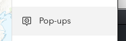
- Click on the "Configure Attributes" icon in the Fields list box to expand it and note that the fields you added to your Places feature layer are already included in the Fields list.
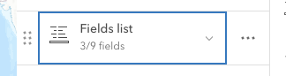
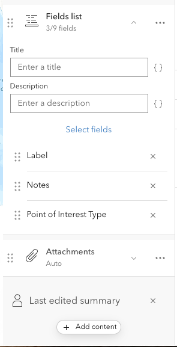
- Click on Select fields in the Fields list.
- Scroll down and note the fields that are unchecked. These are automated fields that will hold the editor tracking values you enabled earlier.
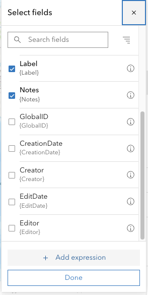
- Click Done to close the Select fields panel, and click the X at the top of the Properties Panel, to close it.
- In the map, Zoom and Pan until you can see the entire Stanford Campus
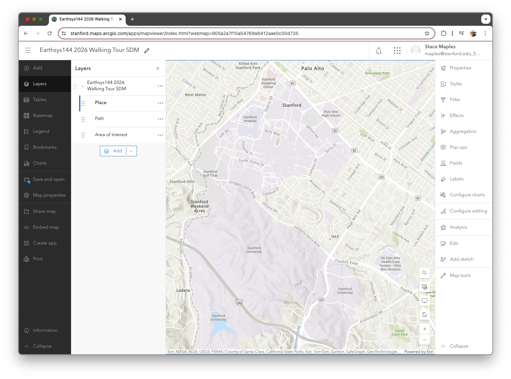
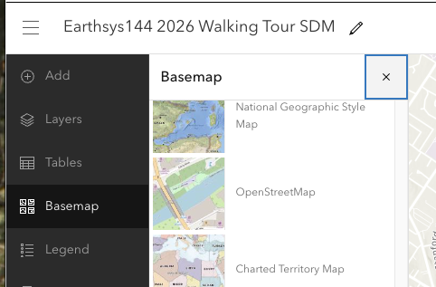
- Save the map.
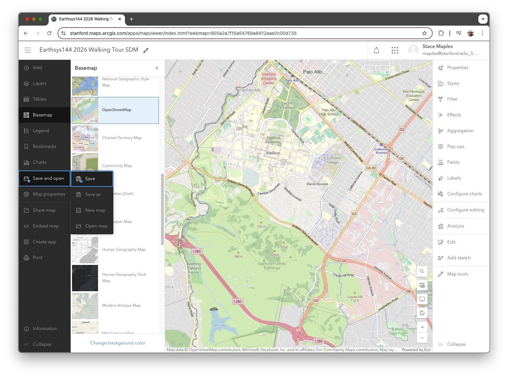
Enable Offline Editing
Click on the Map Properties button
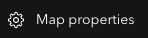
on the left side of the page, then click on the item details.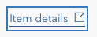
button and then on the More Details... link to go to the Details page of your webmap.
- Click on the Settings tab at the top of the page and scroll down to the section labeled "Offline."
- Make sure that "Offline enabled" is at the top right corner of the panel.
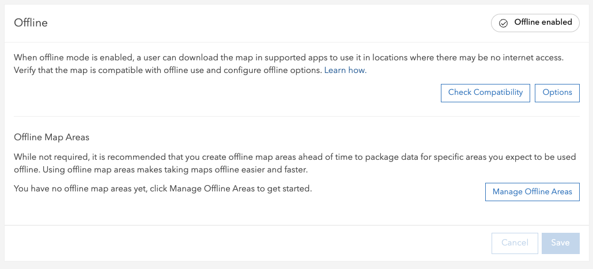
- Click on Manage Offline Areas.
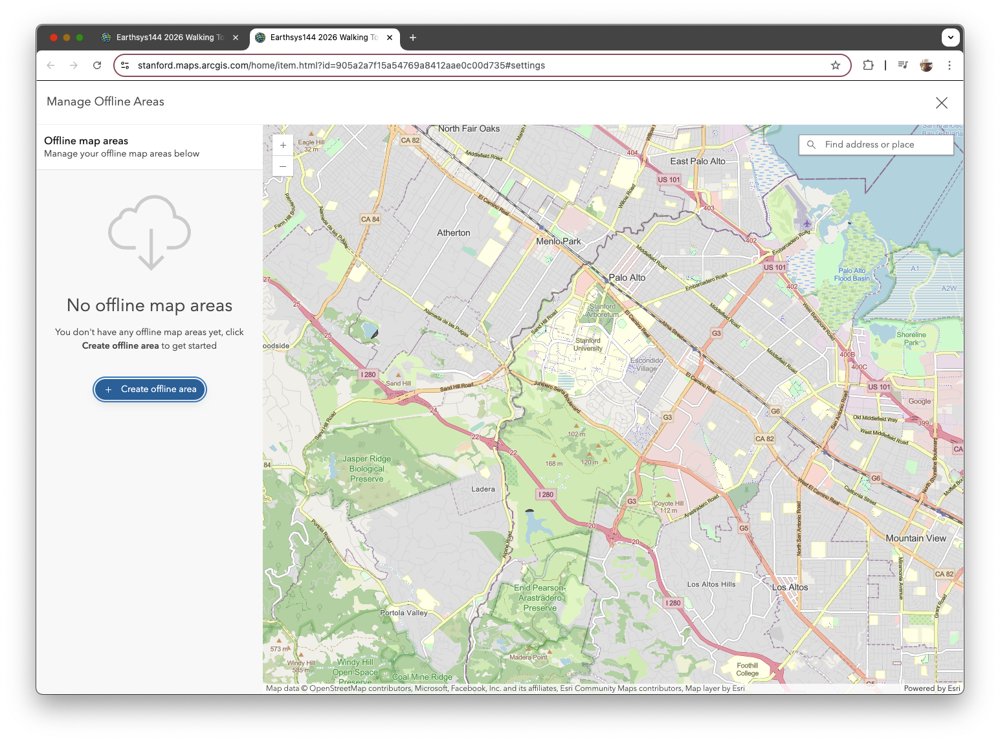
- Click on the + Create offline area button.
- Use the Sketch rectangular map area tool in the map toolbar, and draw a box around the main Stanford Campus.
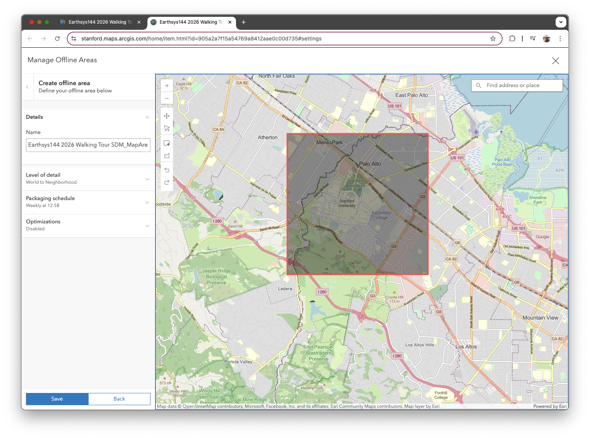
- Leave the remaining setting as their default values and click Save.
- Click the X at the top right corner to dismiss the Manage Offline Areas page.
This offline area is essentially a packaged copy of the map and its editable layers for use on a device when connectivity is unreliable.
Why package an offline area? Offline areas make a field workflow more robust. They shift the project away from depending on constant connectivity and toward a more realistic model of field conditions, where the device may need to keep working even when the network does not.
Use Field Maps Designer to Finish the Editing Form
- Click the 3x3 app launcher icon at the top right of the page, next to your user name, and look for Field Maps Designer. Launch that tool.
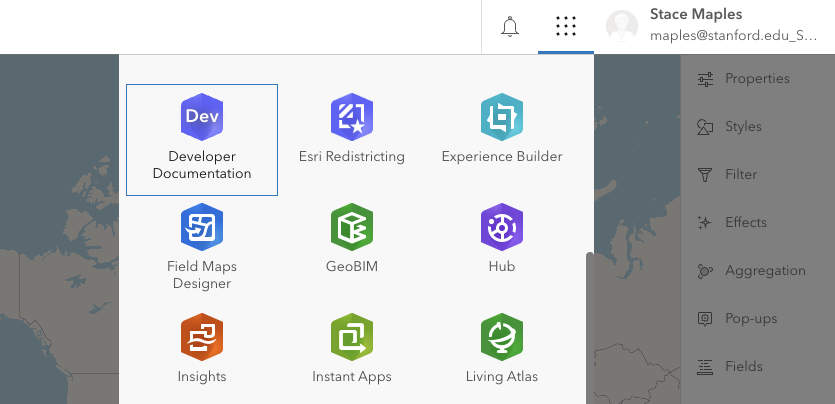
- The resulting list should be sorted by "Last Modified" so your Walking Tour map should be the first item in the resulting gallery list. Click to open it in FieldMaps Designer.
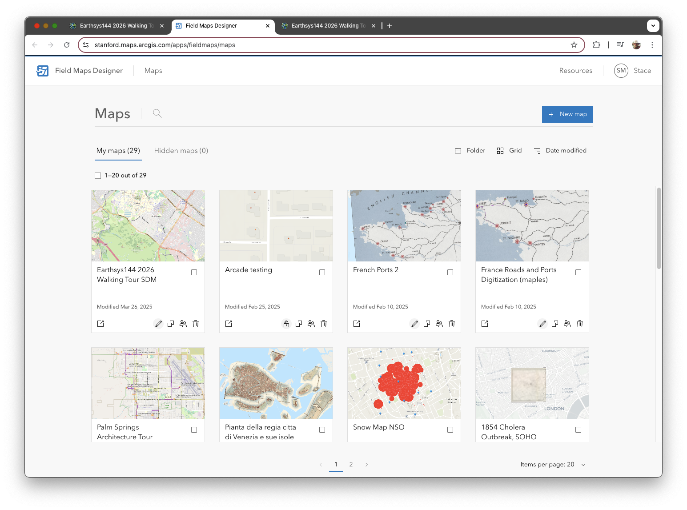
- On the resulting page, make sure Place is selected, and click Convert pop-up to import the pop-up fields into your editing form.
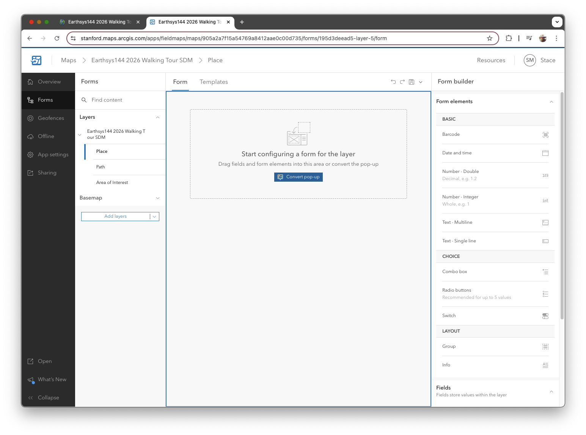
This should result in a basic form design, with your custom fields, like this:
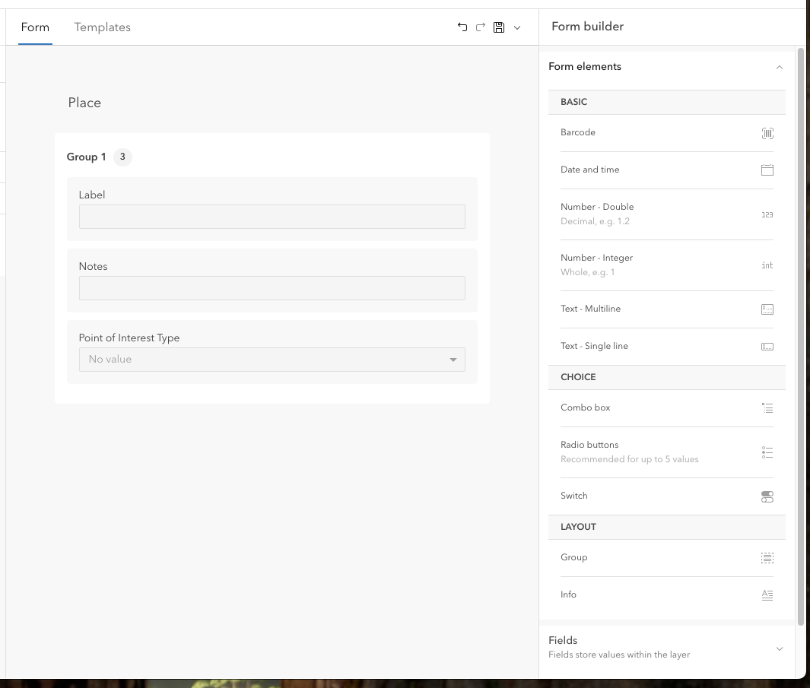
- Drag and drop the Date and time form element into the form designer underneath all other fields.
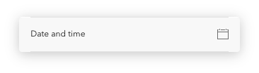
- Add a Display name and Field name for the Date and time form element.
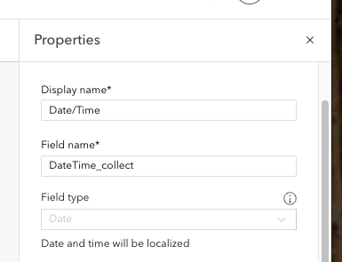
- Note that certain field names are reserved, including the default one that is created when you drop the Date and time form element into the Form Designer. You will need to append
_collectto the end of the field name in the formatting panel:
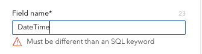
- Once you have added the
Date/Timefield to the form designer, click on the Save button at the top right corner of the Form panel.
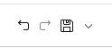
- Click on the App settings button
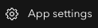
on the left side of the page, and expand each section to familiarize yourself with the options. We will not change any here, but pay particular attention to the options in the Collection section for controlling how the app interacts with the device GPS.
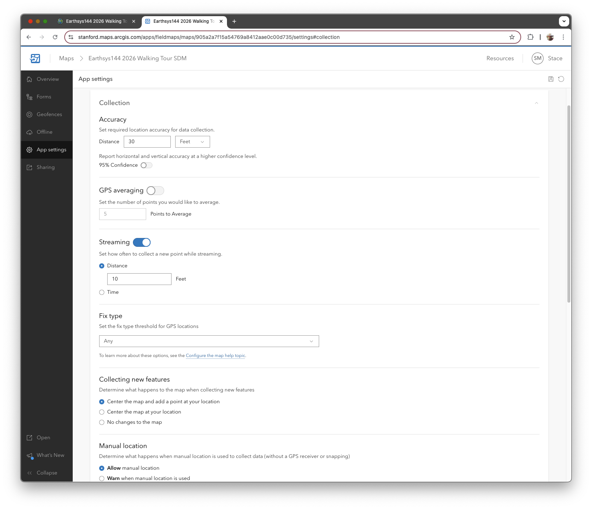
- If you do make changes, be sure to Save your form.
- You can now close the form designer.
Why use the form designer at all? A field data collection project succeeds or fails partly on whether the form is usable. The form is where your schema becomes an actual data-entry experience for a person in the field.
Part 3: Record Points of Interest with Field Maps
For this part of the exercise, you will need to download ArcGIS Field Maps for iPhone or Android from the appropriate app store.
Open ArcGIS Field Maps, using stanford as your organization, and log in with your SUNetID and password.
- Choose the map you just made.
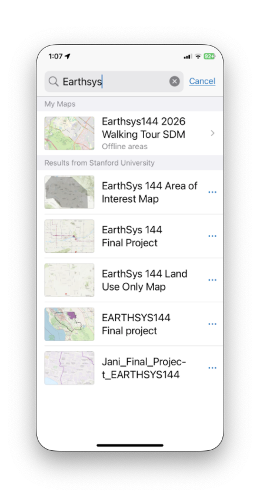
- You should see the Online Map for use when connected to the network and the Map Areas you created for offline use when there is no reliable connectivity.
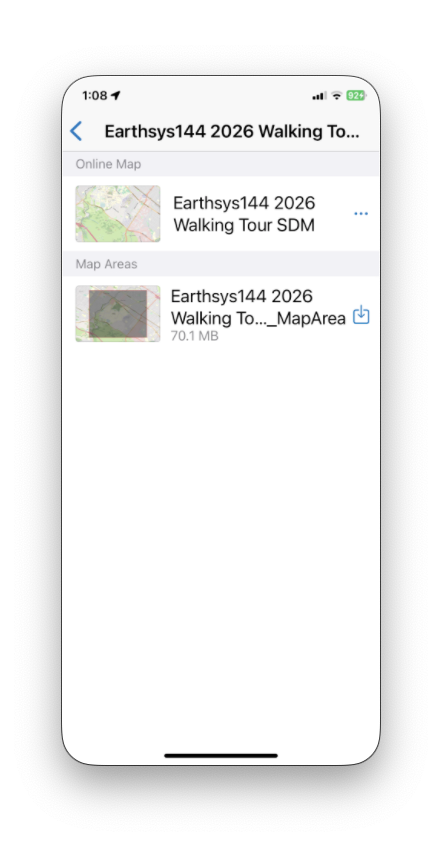
- Click on the + icon in Online Map to begin adding a point.
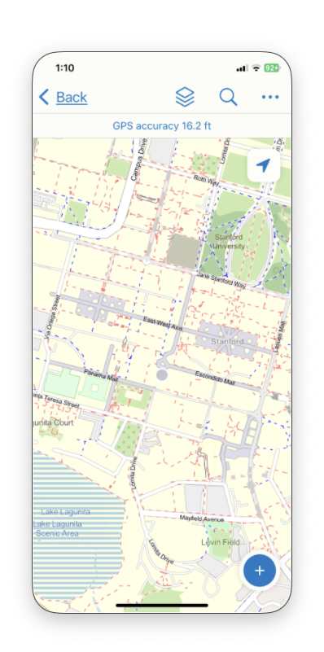
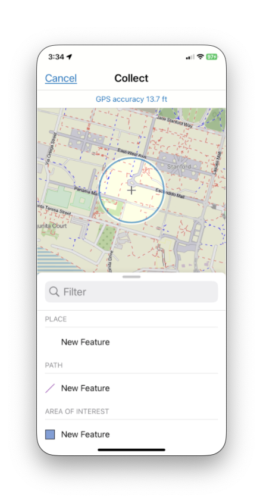
- You can fill out the form before placing the point, or click Add Point first. Sometimes it is useful to wait and place the point after filling the form, to allow your GPS accuracy to improve.
- Walk around campus, adding public art, historically significant locations, technology, or other useful features such as picnic tables, restrooms, or water fountains. Collect at least 12 points, with photo or video attachments.
Field methods note: Good field data is not just about quantity. Try to be consistent about what counts as a feature, use the categories carefully, and write notes that would make sense to another person looking at the data later.
Part 4: Multi-User Editing
Management of multiple field workers can be implemented through the use of Groups in ArcGIS Online. You can create a group with appropriate permissions so that people in that group can access and use the deployed map for data collection.
Join the Current Course Group
First, join the current course group so that you can share and submit your map and feature layers.
Important note: Some of the screenshots below show the course group name from an earlier quarter. Use the current quarter's ArcGIS Online group name and sharing instructions as announced on Canvas.
- From the map, click the Home button and go to Groups.
- Click on the My Organization's Groups tab.
- Search for the current Earthsys144 course group announced on Canvas.
- Click Join This Group.
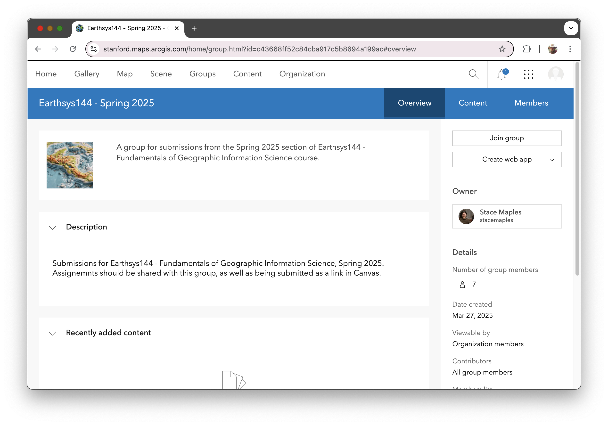
Share the map and feature layer with the group
Now that you are a member of the course group, you can share content with it. Note that anyone in that group may be able to access and use your app for data collection. In your own research projects, you would normally limit group membership carefully to control access to the app.
- Click on the Content tab at the top of the page to go to My Content.
- Find your mapping app, whose item type will be Web Map, and your feature layer. Check their boxes, then click Share.
- Click on the Edit group sharing button, select the current course group, and click OK.
- Click Apply, then click Save to apply the Share settings
Working with the data
Create a View Layer
You may want to share the collected data through a visualization, but you usually do not want to share your full editing map with everyone. Creating a View Layer is a way to safely share the collected data without exposing the editing layer itself.
Important concept: In GIS, sharing and editing are not the same thing. Separating editable data from read-only views is a core part of responsible data management.
- Return to your Content page, and find your Walking Tour feature layer item and click on it to go to the Details page.
- Click on the Create View Layer button
- Give it an appropriate name like
My Mapping App Data Public View (_SUNetID_)and click OK - Click on the Share Button in the resulting Details Page, and change the Sharing to
Public.
The resulting feature layer is a read-only view of the data being collected in your mapping app. It can be added to a new map, filtered, symbolized, used in a web application, and shared publicly, within the Stanford organization, or with a controlled group, but without editing permissions.
To Turn In
- Join the current Earthsys144 ArcGIS Online course group and share your data collection map app with that group.
- Return to the details page of your web map and copy the URL from the browser URL bar. Submit that URL in Canvas.
- Go to the details page for the view layer you created and find its URL. Submit that URL in Canvas as well.
These two links represent two different roles in the workflow:
- The web map shows the working collection environment.
- The view layer shows the shared, non-editable version of the collected data.
Conclusion
In this lab, you built a simple field data collection workflow from the ground up. You:
- Created hosted feature layers in ArcGIS Online
- Added fields and controlled-value lists to structure incoming data
- Configured a web map for mobile data collection
- Enabled offline use
- Customized the editing form in Field Maps Designer
- Collected data on a mobile device
- Shared the results through a view layer and course group
This kind of workflow is common in research, planning, environmental monitoring, public history, archaeology, and community mapping. In later projects, you can adapt the same basic pattern to collect your own field observations, survey results, media, and spatial notes.